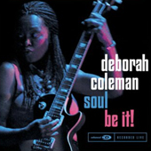

|
Deborah COLEMAN
(3 октября 1956, Портсмут, Виржиния.)
Дебра Коулмен - американская блюзовая гитаристка и певица, тяготеющая к блюз-року. Явное влияние Хендрикса в сочетании с собственными интересными идеями и большой исполнительской энергетикой.
|
Первый альбом появился в середине 90-х годов. Выглядит она на фотографиях очень молодо, и потому сразу была записана в "молодые исполнители", хотя ей на самом деле было уже за сорок. Как бы то ни было, высокая "молодая" энергетика ее выступлений - очевидна.
Родилась в семье военного; родители, братья и сестры - все были музыкантами-любителями. Коулмэн начала играть на гитаре с 8 лет. Не блюзы, но Monkeys послужили ей первым образцом для подражания, лишь позже она стала открывать для себя блюз, но открытие шло от пластинок Jimi Hendrix, Cream, Jeff Beck и Led Zeppelin. (Это странно, но многие афро-американские блюзмены ее поколения к блюзу приобщались не от родных, не от выступлений местных блюзменов, но именно через блюз-рок). В 15 лет начала выступать профессионально как бас-гитаристка, а затем соло-гитаристка в местных рок-группах. Ей был 21 год, когда она побывала на концерте, где в одной программе выступали Muddy Waters, Howlin' Wolf и John Lee Hooker - с этого момента она начала всерьез интересоваться именно блюзом. В 25 лет вышла замуж, родила ребенка. Покинула эстрадную работу ради более стабильного заработка медсестры и даже электрика. В 1985г. предприняла первые попытки вернуться в музыку. Стала более внимательно изучать блюз. В 1993г. с собственной группой приняла участие в национальном конкурсе талантов при блюз-фестивале в Чарлстоне - и заняла первое место. Денежный приз использовала для демо-записи и приступила к гастролям. Спустя два года вышел ее дебютный альбом, с 1997г. сотрудничает с Blind Pig. В 2002г. вышел ее 6-й альбом на этом лейбле - концертная запись Soul Be It! Альбом продемонстрировал, что именно живые выступления - наиболее сильная сторона Дебры Коулмэн. Долгие гитарные импровизации уже вышли из моды, но ей удается захватить публику именно яростным, буйным, увлекательным гитарным соло. Многократно номинировалась на премию им. Дабл-Ю-Си Хэнди.
ВЭБ™'03
Дискография:
 Takin' a Stand (New Moon 1995)- I Can't Lose (Blind Pig, 1997)
- Where Blue Begins (Blind Pig, 1998)
- Soft Place to Fall (Blind Pig, 2000)
- Livin' on Love (Blind Pig, 2001)
- Soul Be It! (Blind Pig, 2002)
|